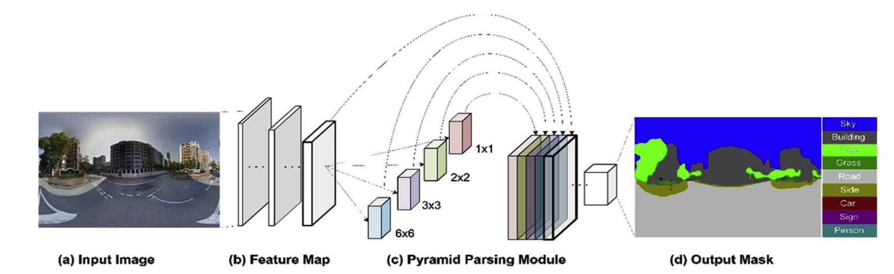
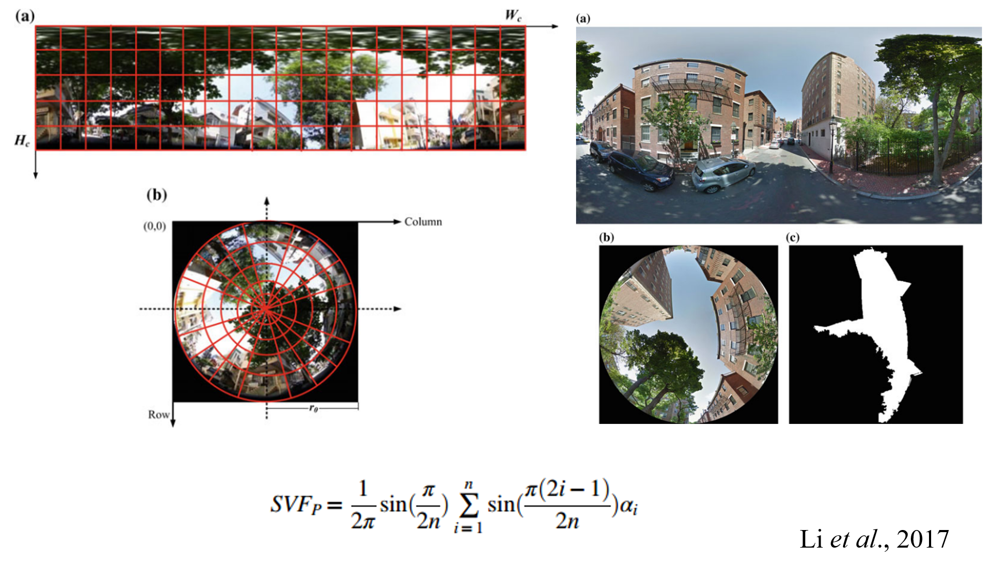

Research:
As cities around the world race to implement green canopy strategies, we have developed a metric - the Green View Index - by which to evaluate and compare canopy cover. The Green View Index (GVI) was calculated using Google Street View (GSV) panoramas. This method considers the obstruction of tree canopies and classifies the images accordingly. By using GSV rather than satellite imagery, we represent human perception of the environment from the street level.

Media Coverage:
Wall Street Journal, "New Tool Lets Cities See Where Trees Are Needed".
Forbes, "Where The Streets Are Paved With Green: Counting Urban Tree".
The Guardian, "One day in the life of San Francisco Bay - Mapped".
Associated Press, "Where are trees? Not Paris, new Green View Index" finds".
CBC News, "Toronto beats NYC, Paris, London in new tree ranking, but experts say more work needed".
CityLab, "Mapping the Urban Tree Canopy in Major Cities".
NextCity, "Mapping Urban Trees in 11 Cities".
The progress in deep learning makes it possible to derive urban features from street-level images accurately. The increasingly abundant labeled street-level images and the well developed convolutional neural networks make it possible to recognize more spatial information from geo-tagged street-level images. The combination of deep learning and spatial data science provide a lot of opportunities.
Xiaojiang Li, Bill Yang Cai, Carlo Ratti, Using Street-level Images and Deep Learning for Urban Landscape Analysis, Landscape Architecture Frontier, 2018.
Fangying Gong, Zhaocheng Zeng, Fan Zhang, Xiaojiang Li, Edward Ng, Les Norford. (2018). Mapping sky, tree, and building view factors of street canyons in a high-density urban environment, Building and Environment. 134, 155-167.
Fig. 1. PSPnet convolutional neural network

Fig. 2. Image segmentaion of GSV panoramas, (a) GSV panoramas, (b) blend of GSV panorama and segmented results, (c) segmented hemispherical images transformed from GSV panoramas.
Streets are the basic unit for human activities in cities, it is important to understand how the streetscape environment can influence human health conditions. In this study, we investigated the influence of street greenery and walkability on body mass index in Cleveland, Ohio, USA. Different from the area level and overhead view greenery metrics, we used the green view index calculated from the Google Street View to represent the amount of street greenery. The Walk Score was used to indicate the walkability of neighborhoods also at the street level. Statistical analysis results show that the Walk Score has a more significant association with decreased BMI for males than females and the street greenery has a more significant association with decreased BMI for females than males in Cleveland, Ohio. The results of this study would provide a reference for designing gender-specific healthy cities.
Xiaojiang Li & Ghosh, D. (2018). Associations between Body Mass Index and Urban "Green" Streetscape in Cleveland, Ohio, USA. International journal of environmental research and public health, 15(10), 2186.
Figure. Google Street View (GSV) image collection and classification.
Figure. The spatial distributions of GVI and Walk Score at the site level and census tract level in Cleveland, Ohio.
Having an active lifestyle is recognized to positively contribute to public health. Creating more walkable streets and neighborhoods is an important way to promote an active lifestyle for urban residents. It is therefore important to understand how the urban built environment can influence human walking activities. In this study, we investigated the interaction of human walking activities and physical characteristics of streetscapes in Boston. A large number of anonymous pedestrian trajectories collected from a smartphone application were used to estimate human walking activities. Publicly accessible Google Street View images were used to estimate the amount of the street greenery and enclosure of street canyons, both of which were used to indicate the physical characteristics of streetscapes.
Xiaojiang Li, Paolo Santi, ..., Carlo Ratti. Investigating the association between streetscapes and human walking activities using Google Street View and human trajectory data. Transactions in GIS.
Fig.3. Map-matching of human trajectories to streets: the purple lines represent the raw trajectories of anonymous individuals, and the green lines represent the matched trajectories based on Open Street Map.
Fig.4. The spatial distributions of the trip number at street level and site level in Boston.
Fig.5. The spatial distributions of independent variables (a) the Walk Score, (b) the Green View Index, (c) the enclosure of streetscapes enclosed by buildings, (d) the enclosure of streetscapes enclosed by the street tree canopies.
The sky view factor is a very important parameter of street canyons. It has been widely used in urban climate study, urban forestr, urban air pollution. However, previouslly there is no efficient and easy way to estimate and map the sky view factor at large scale. I have proposed to use Google Street View to generate sky view factor map automatically. The publicly accessible Google Street View would provide a great impetus to all studies relating sky view factor.
Li. X., Ratti. C., Seiferling. I, 2017, Quantifying the shade provision of street trees in urban landscape: A case study in Boston, USA, using Google Street View, Landscape and Urban Planning, 169, 81-91.

Comparison of fisheye images created by GSV-based method and simulation-based method, (a) fisheye images from GSV panoramas, (b) sky pixel classification results of the fisheye images, (c) radar plots of the building obstruction angles by the simulation method.

Street trees provide shade and increase human thermal comfort during hot summer. This study investigated the spatial distribution of the shade provision of street trees in Boston, Massachusetts using Google Street View and building height model. The result shows that the street trees help to decrease the SVF by 24.61% in street canyons of Boston.
Xiaojiang Li, Carlo Ratti, Estimating the shade provision of street greenery in Boston by combining remote sensing data and Google Street View panoramas, Urban Forestry and Urban Greening, 2018.
Fig.3. The spatial distributions of the SVF factors in Boston, (a) the spatial distribution of SVF estimated using building height model, (b) the spatial distribution of SVF estimated using Google Street View panorama, (c) The spatial distribution of the SVF difference between two methods, (d) the tree canopy cover in Boston.
City streets are a focal point of human activity in urban centers. Citizens interact with the urban environment through its streetscape and it is imperative to, not only map city streetscapes but quantify those interactions in terms of human well-being. Google Street View (GSV), which captures the profile view of streetscapes and, thus, shares equivalent viewing angles with those of the citizen. Based on machine learning and image analysis, GSV can be utilized as a high-quality data source for mapping street greenery and openness.
Li, X., Ratti, C., & Seiferling, I. (2017, July). Mapping Urban Landscapes Along Streets Using Google Street View. In International Cartographic Conference (pp. 341-356). Springer, Cham.
Sky view factor (SVF) estimation using Google Street View.


Li, X., Li, W., Meng, Q., Zhang, C., Jancso, T., & Wu, K. (2016). Modelling building proximity to greenery in a three-dimensional perspective using multi-source remotely sensed data. Journal of Spatial Science, 61(2), 389-403.
Street-level greenery has long played a critical role in the visual quality of urban landscapes. This living landscape element can and should be assessed for the quality of visual impact with the GSV information, and the assessed street-level greenery information could be incorporated into urban landscape planning and management.

Li, X., Zhang, C., Li, W., Ricard, R., Meng, Q., & Zhang, W. (2015). Assessing street-level urban greenery using Google Street View and a modified green view index. Urban Forestry & Urban Greening, 14(3), 675-685.
Urban green space provides a series of esthetic, environmental and psychological benefits to urban residents. However, the relationship between the visibility of green vegetation and perceived safety is still in debate. My research investigate whether green vegetation could help to increase the perceived safety based on a crowdsourced dataset: the Place Pulse 1.0 dataset.


Li, X., Zhang, C., & Li, W. (2015). Does the visibility of greenery increase perceived safety in urban areas? Evidence from the place pulse 1.0 dataset. ISPRS International Journal of Geo-Information, 4(3), 1166-1183.
Urban environmental injustice has received considerable attention in urban studies. As and important componment of urban ecosystem, urban greenery has long been recognized as an important component of urban ecosystem and provides many benefits to urban residents.Unequal access to green spaces represents environmental disparities when some urban residents are deprived of the benefits that green spaces provide.


Li, X., Zhang, C., Li, W., Kuzovkina, Y. A., & Weiner, D. (2015). Who lives in greener neighborhoods? The distribution of street greenery and its association with residents socioeconomic conditions in Hartford, Connecticut, USA. Urban Forestry & Urban Greening, 14(4), 751-759.
Li, X., Zhang, C., Li, W., & Kuzovkina, Y. A. (2016). Environmental inequities in terms of different types of urban greenery in Hartford, Connecticut. Urban Forestry & Urban Greening, 18, 163-172.